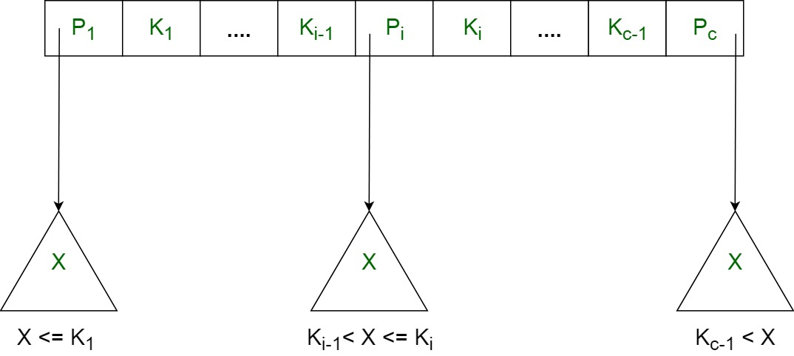
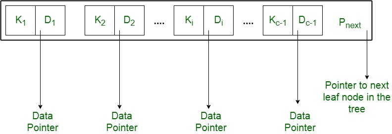

In order, to implement dynamic multilevel indexing, B-tree and B+ tree are generally employed. The drawback of B-tree used for indexing, however is that it stores the data pointer (a pointer to the disk file block containing the key value), corresponding to a particular key value, along with that key value in the node of a B-tree. This technique, greatly reduces the number of entries that can be packed into a node of a B-tree, thereby contributing to the increase in the number of levels in the B-tree, hence increasing the search time of a record.
B+ tree eliminates the above drawback by storing data pointers only at the leaf nodes of the tree. Thus, the structure of leaf nodes of a B+ tree is quite different from the structure of internal nodes of the B+ tree. It may be noted here that, since data pointers are present only at the leaf nodes, the leaf nodes must necessarily store all the key values along with their corresponding data pointers to the disk file block, in order to access them. Moreover, the leaf nodes are linked to provide ordered access to the records. The leaf nodes, therefore form the first level of index, with the internal nodes forming the other levels of a multilevel index. Some of the key values of the leaf nodes also appear in the internal nodes, to simply act as a medium to control the searching of a record.
From the above discussion it is apparent that a B+ tree, unlike a B-tree has two orders, ‘a’ and ‘b’, one for the internal nodes and the other for the external (or leaf) nodes.
The structure of the internal nodes of a B+ tree of order ‘a’ is as follows:
- Each internal node is of the form :
<P1, K1, P2, K2, ….., Pc-1, Kc-1, Pc>
where c <= a and each Pi is a tree pointer (i.e points to another node of the tree) and, each Ki is a key value (see diagram-I for reference).
- Every internal node has : K1 < K2 < …. < Kc-1
- For each search field values ‘X’ in the sub-tree pointed at by Pi, the following condition holds :
Ki-1 < X <= Ki, for 1 < i < c and,
Ki-1 < X, for i = c
(See diagram I for reference) - Each internal nodes has at most ‘a’ tree pointers.
- The root node has, at least two tree pointers, while the other internal nodes have at least \ceil(a/2) tree pointers each.
- If any internal node has ‘c’ pointers, c <= a, then it has 'c – 1' key values.

The structure of the leaf nodes of a B+ tree of order ‘b’ is as follows:
- Each leaf node is of the form :
<<K1, D1>, <K2, D2>, ….., <Kc-1, Dc-1>, Pnext>
where c <= b and each Di is a data pointer (i.e points to actual record in the disk whose key value is Ki or to a disk file block containing that record) and, each Ki is a key value and, Pnext points to next leaf node in the B+ tree (see diagram II for reference). - Every leaf node has : K1 < K2 < …. < Kc-1, c <= b
- Each leaf node has at least \ceil(b/2) values.
- All leaf nodes are at same level.

Using the Pnext pointer it is viable to traverse all the leaf nodes, just like a linked list, thereby achieving ordered access to the records stored in the disk.
A Diagram of B+ Tree –

Advantage –
A B+ tree with ‘l’ levels can store more entries in its internal nodes compared to a B-tree having the same ‘l’ levels. This accentuates the significant improvement made to the search time for any given key. Having lesser levels and presence of Pnext pointers imply that B+ tree are very quick and efficient in accessing records from disks.